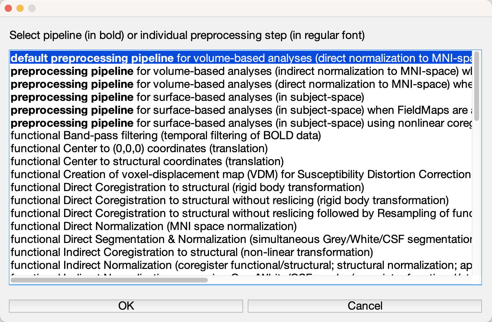
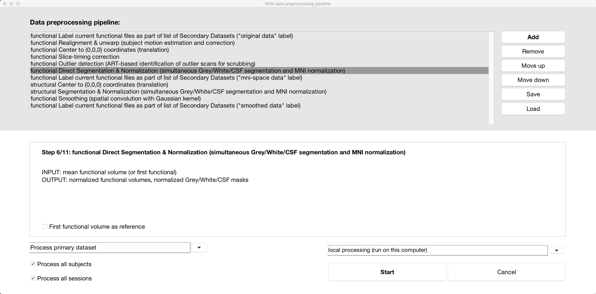
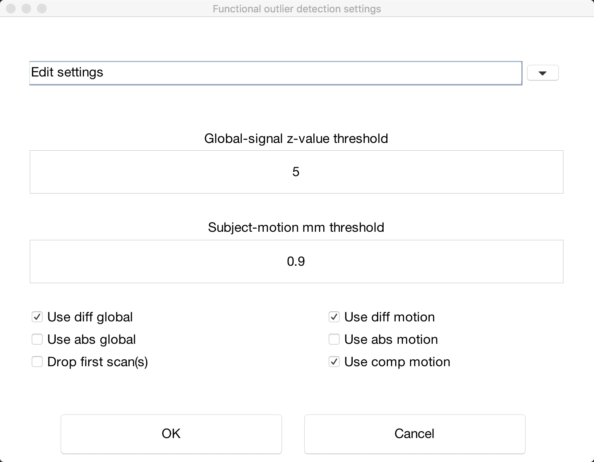

Preprocessing a resting-state dataset is similar to how you preprocess a task-related dataset: You do the same steps of realignment, segmentation, normalization, and so on. The main difference is in the motion threshold. Resting-state datasets are notoriously susceptible to motion-related artifacts; even small movements can introduce spurious correlations. These artifacts are particularly problematic for laboratories studying disorders such as schizophrenia, or for researchers who scan very old or very young people. Too much movement will ruin your study.
There is no simple way to address this problem, aside from training the subjects to move as little as possible. That said, the CONN toolbox has several methods for mitigating movements artifacts, including ART (Artifact Detection Tools) and principal component filtering of signal from tissues you may not be interested in, such as white matter and cerebrospinal fluid - a method known as CompCor, short for Component Correction. In the following chapters, we will examine how including or omitting these steps will affect our results.
Our first step is to preprocess the data to improve the quality of the images and reduce noise - similar to what we did with the preprocessing of fMRI data. To perform all of the classical preprocessing steps as well as removal of movement artifacts, click on the Preprocessing button at the bottom left of the screen.

This will open a menu showing virtually every preprocessing step available. Bold font indicates a pipeline, or series of preprocessing steps that have already been arranged in a particular order. The first option that is highlighted, “default preprocessing pipeline”, will do a traditional analysis that normalizes volumetric data to MNI space. If you are a more experienced user, you may want to explore some of the other options, such as using FreeSurfer to analyze the subject’s data in their native space. For now, highlight the default preprocessing pipeline and click OK.
This will add all of the preprocessing steps into the window at the top of the screen. Highlighting a step will display a short description of what the step does, along with the input and output. Some steps, such as “functional Direct Segmentation & Normalization”, allow you to specify additional options, such as whether you want to use the “First functional volume as reference.” (These options probably won’t affect your results much, if at all, but they are there at your disposal.) You can also move certain steps up or down in the pipeline, or add and remove certain steps, by using the button on the right of the menu. For now, click the Start button to begin preprocessing the individual subject that we have loaded.

Note
At the fMRI Lab at the University of Michigan, the images that are uploaded to the server already have been slice-time corrected and motion-corrected; therefore, you can omit those steps from the preprocessing pipeline by highlighting them and clicking the Remove button.
Before the preprocessing can start, you will be prompted to enter a few more options. For example, you need to specify the slice order, which should be on your scan log; if you’re unable to locate it, ask your scan technician to find out what order was used. In this tutorial, we will use the interleaved (Siemens) ordering. You will also be asked to specify the threshold for how ART identifies an outlier. The “intermediate settings (97th percentile)” should work fine for most cases, although you may want to set it to a higher or lower threshold depending on the population you are studying. Instead of basing the threshold on a normative sample, moreover - in other words, the settings that have already been selected - you can instead choose to edit the settings directly by selecting “Edit settings” and manually setting the subject-motion mm threshold.

For our current tutorial, we will leave it at the intermediate settings.
You will next be prompted to select the sampling resolution of the anatomical and functional output. The defaults of (1x1x1)mm^3 for the anatomical image and (2x2x2)mm^3 for the functional images should be fine; if you want to take up less space on your hard drive, you can lower the resolution (i.e., increase the numbers in the fields), at the expense of lower spatial resolution.
Finally, you will be asked to specify a smoothing kernel. As you will see later, the smoothed data by default is omitted from the actual functional connectivity analysis; it is included here in case you want to use it. Click OK, and the preprocessing will begin, calling upon SPM tools as needed. For this subject, it will take about 5 minutes total.
If you notice a coregistration error with certain runs and not others, it may be an issue with the preprocessing stream. Negin Nadvar of the University of Michigan writes:
When preprocessing multiple fMRI runs with conn preprocessing pipelines (such as preprocessing pipeline for indirect normalization to MNI space), if I remove the motion correction steps from the pipeline, I noticed some registration issues with run 2 and higher runs. After lots of troubleshooting, I noticed that when I omit the motion correction step from this pipeline, the CONN toolbox appears to assume that all the runs are already coregistered to run 1 and this results in inaccurate corregistration/normalization for run 2 and higher runs. In order to fix this issue, in the preprocessing window, I deselected the “Process all sessions” and from the drop down menu picked 1 session and applied the preprocessing to that 1 session for all the subjects and next picked another session and applied the preprocessing to each of those sessions individually. This prevented the issue and drastically improved my coregistration/normalization.
Click on the Preprocessing button again, and note that all of the previous preprocessing steps have already been loaded. Select Add, and note all of the options that are presented for processing both the functional and structural data. Find the preprocessing step to remove the initial scans, and then click the Moveup button to move this step to the top of the preprocessing list. Click Start. When prompted for the number of scans to remove, enter 2. Keep the rest of the settings as the defaults, except for Smoothing, which you can change to 4mm. Click OK. When the preprocessing for this subject finishes, click on Functional, and take a screenshot of the resulting image. Similar to smoothing functional images for task-based data, the volumes should look different. When would you want to use a smaller smoothing kernel as opposed to a larger smoothing kernel?
If everything has run without error, you should see a pop-up window saying that everything has finished without any problems. When the preprocessing has finished, we will need to inspect the images for any artifacts or other problems - in other words, we will do Quality Assurance (QA) checks. To learn more about how to do them, click the Next button.